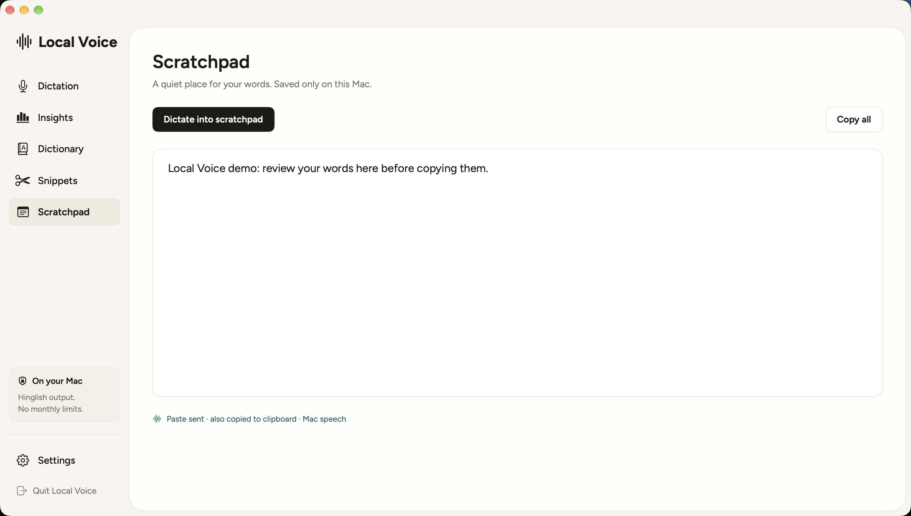

LOCAL VOICE · NATIVE MAC APP
Your words.
On your Mac.
Dictation for English, Hindi and Hinglish, with English translation or Latin-script Hinglish output. Local speech models keep inference on your Mac after initial setup.
Source and setup on GitHub ↗
Experimental source build for Apple Silicon. Requires developer tools and model downloads. Not notarized; no Apple-trusted binary release.A place to review before copying

Tap or hold Fn to dictate, review text in Scratchpad, customize words with Dictionary and Snippets, and cancel or recover failed processing. Recognition and spelling can make mistakes—review your output.
Setup and limitations
The Swift app targets macOS 14+. Optional current MLX/Qwen runtimes require macOS 26.2+. Initial setup needs internet and several GB of downloads. Public source supports local inference; private-server mode is disabled. Read the repository for permissions and model requirements.
Built by Parth Mudgal. Speech and transliteration rely on whisper.cpp, Whisper, optional MLX/Qwen, and AI4Bharat IndicXlit. Third-party licenses and reliability-pattern attribution are included in the repository.
Browse source and installation instructions · Try it locally and suggest improvements in the social post’s replies.